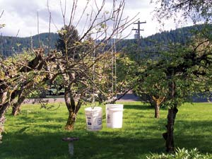

Around our area we’re known for our unusual gardening methods. My latest project really had the neighborhood and passing cars wondering!
We have 12 mature apple, plum and pear trees in the front half acre of our property. After many pruning mistakes, I finally realized that I needed to train new limbs. I tried wiring them down, but in the dark you could trip on the wires, so I abandoned that idea. Then I thought of just hanging bricks, the ones with holes in them. Well, I couldn’t get the weight right, and adding and taking bricks off is hard and can damage the trees. I didn’t know what to do until I was cleaning out one of our storage areas and saw all the buckets we use for harvesting, and realized I wouldn’t need them during the growing season. So, I cut soft rope to the length I needed, tied the middle around the stoutest part of the tree limb I wanted to train, and tied each end to the handle of a bucket. I added water to the buckets to bend the limb a little at a time, enough so it wouldn’t break.
I can hang the buckets down low enough so that if they do swing, they can’t damage the tree or other limbs and it’s easy for me to work with them. I can add water or tip the bucket over to water the lawn; it takes no time at all. Now I have limbs growing in the positions I need them.
|
 NANCY MCLAUGHLIN Buckets filled with water and attached to tree limbs will aid in directing the growth of the branches. |
|
|